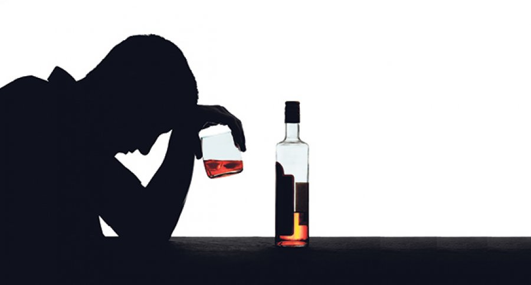

Dobrodošli!
Ovde možete pronaći osnovne informacije o alkoholizmu, njegovim posledicama po zdravlje i okolinu, kao i pomoć pri rešavanju ovog problema.
Alkoholizam je ozbiljan poremećaj koji karakteriše nekontrolisano i prekomerno konzumiranje alkohola. Ovaj oblik zavisnosti može pokazivati različite osobine i imati štetne posledice kako po osobu koja pati od alkoholizma, tako i po njeno okruženje.
Potrazite stručnu pomoć!
Alkoholičar
(Ne)prekidiva vezanost